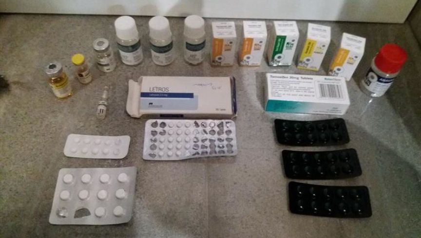
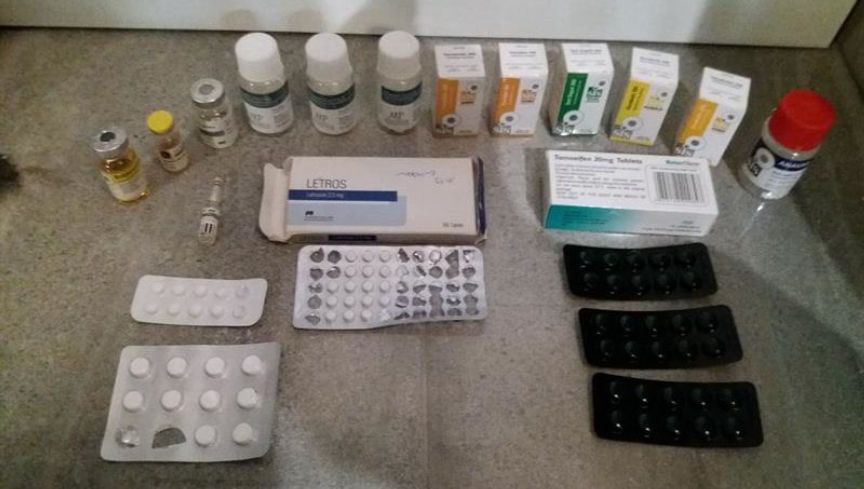

RCMP Arrested Three in AlwaysOverweight Case
Updated June 1, 2022 to add a comment from AlwaysOverWeight.
Canadian authorities have charged three people in connection with the investigation into the darkweb vendor “AlwaysOverweight.”
In February 2020, the Royal Canadian Mounted Police (RCMP) raided two homes in Nanaimo and arrested three people for their roles in an alleged drug trafficking operation. As covered in the Darknetlive article from that month, the RCMP announced that they had arrested the people responsible for running the darkweb vendor account “AlwaysOverweight.”
After publishing the article about the purported AlwaysOverweight case, an entity representing themselves as AlwaysOverweight emailed me, claiming that the police had not arrested him.

On May 31, 2022, the RCMP released the suspects’ identities and accused them of playing some role in the operation of the AlwaysOverweight drug trafficking organization.
“AlwaysOverweight used cryptocurrency and encrypted messaging applications to cover its tracks while anonymously trafficking a large variety of drugs including methamphetamine, oxycodone, cocaine, MDMA, Xanax, and what was advertised as heroin but was in fact the deadlier opioid, fentanyl, that was mixed with other cutting agents.”
The RCMP effectively claimed that the vendor account was operated out of one of the houses they had searched.
“While remaining agile and using innovative investigative techniques combined with proven effective conventional methodologies, the FSOC team was able to successfully penetrate the criminal group’s digital barriers and identified a Nanaimo address as being the dark web vendor’s physical location.”
As a result of the successful penetration, agile mounties arrested three people: Kien Trung Pham, Kerry Chang, and Gordon Brooks.

Pham faces eleven counts of Trafficking a Controlled Substance and four counts of Possession of a Controlled Substance for the Purpose of Trafficking a Controlled Substance under the Controlled Drugs and Substances Act (CDSA).
Brooks faces seven counts of Trafficking a Controlled Substance and seven counts of Possession of a Controlled Substance for the Purpose of Trafficking under the CDSA.
Chang faces one count of Trafficking a Controlled Substance under the CDSA.

The suspects will appear in court at the Nanaimo Provincial Courthouse on June 7, 2022.
AlwaysOverWeight emailed me after publication:
“This article is old news.<br>The people involved and being charged with the “alwaysoverweight” case are not related to the real alwaysoverweight.<br>I remain operational and un-comprimsed.<br>Its sad to see others going down for crimes they did not commit.”
I will get a signed copy shortly.
Previously:[list]*Notes About the AlwaysOverweight Case*RCMP Arrested Empire Vendor “AlwaysOvrWeight”[/list]
[em]Dark web organized crime group taken down by BC RCMP FSOC[/em] | archive.is, archive.org, rcmp-grc.gc.ca
Canadian authorities have charged three people in connection with the investigation into the darkweb vendor “AlwaysOverweight.”
In February 2020, the Royal Canadian Mounted Police (RCMP) raided two homes in Nanaimo and arrested three people for their roles in an alleged drug trafficking operation. As covered in the Darknetlive article from that month, the RCMP announced that they had arrested the people responsible for running the darkweb vendor account “AlwaysOverweight.”
After publishing the article about the purported AlwaysOverweight case, an entity representing themselves as AlwaysOverweight emailed me, claiming that the police had not arrested him.

The RCMP seized large quantities of drugs during the execution of search warrants at two properties in Nanaimo.
On May 31, 2022, the RCMP released the suspects’ identities and accused them of playing some role in the operation of the AlwaysOverweight drug trafficking organization.
“AlwaysOverweight used cryptocurrency and encrypted messaging applications to cover its tracks while anonymously trafficking a large variety of drugs including methamphetamine, oxycodone, cocaine, MDMA, Xanax, and what was advertised as heroin but was in fact the deadlier opioid, fentanyl, that was mixed with other cutting agents.”
The RCMP effectively claimed that the vendor account was operated out of one of the houses they had searched.
“While remaining agile and using innovative investigative techniques combined with proven effective conventional methodologies, the FSOC team was able to successfully penetrate the criminal group’s digital barriers and identified a Nanaimo address as being the dark web vendor’s physical location.”
As a result of the successful penetration, agile mounties arrested three people: Kien Trung Pham, Kerry Chang, and Gordon Brooks.
Dread users had theories about the events that transpired after the initial incident involving alleged AlwaysOverweight conspirators.
Pham faces eleven counts of Trafficking a Controlled Substance and four counts of Possession of a Controlled Substance for the Purpose of Trafficking a Controlled Substance under the Controlled Drugs and Substances Act (CDSA).
Brooks faces seven counts of Trafficking a Controlled Substance and seven counts of Possession of a Controlled Substance for the Purpose of Trafficking under the CDSA.
Chang faces one count of Trafficking a Controlled Substance under the CDSA.
AlwaysOverWeight maintains that the arrests are not related to his operation.
The suspects will appear in court at the Nanaimo Provincial Courthouse on June 7, 2022.
AlwaysOverWeight emailed me after publication:
“This article is old news.<br>The people involved and being charged with the “alwaysoverweight” case are not related to the real alwaysoverweight.<br>I remain operational and un-comprimsed.<br>Its sad to see others going down for crimes they did not commit.”
I will get a signed copy shortly.
Previously:[list]*Notes About the AlwaysOverweight Case*RCMP Arrested Empire Vendor “AlwaysOvrWeight”[/list]
[em]Dark web organized crime group taken down by BC RCMP FSOC[/em] | archive.is, archive.org, rcmp-grc.gc.ca